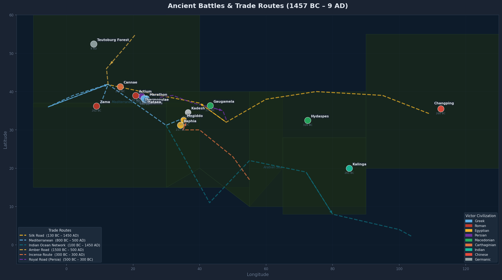
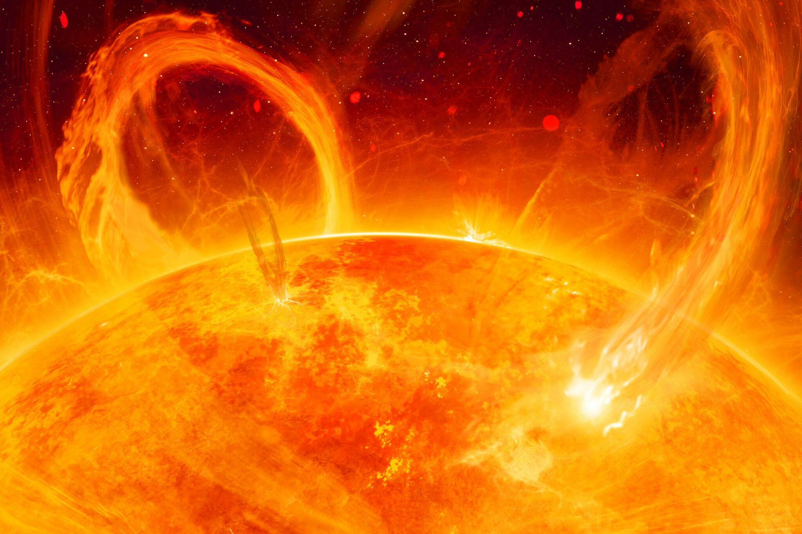
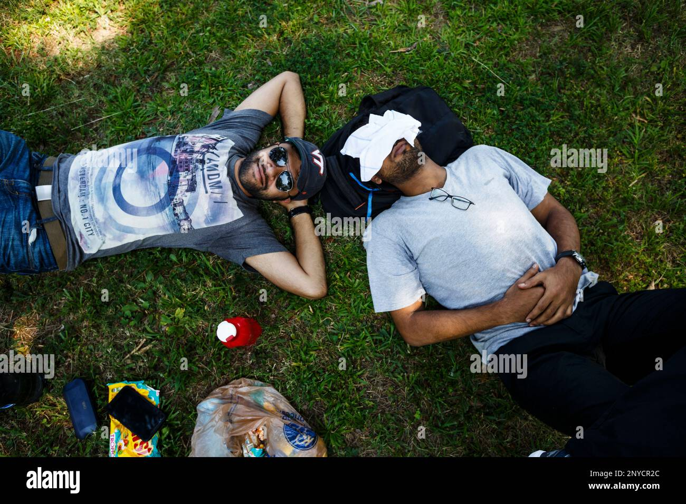

Writing
Science, data, and the hidden patterns of our world — for the curious mind
5,000 Years of War & Trade — Civilizations Data Analysis
What patterns emerge when you plot 15 ancient battles, 6 trade routes, and 15 empires on a map? A geospatial and temporal analysis of the Civilizations Explorer dataset — with original Python visualizations showing how battles clustered near trade chokepoints and how military outcomes reshaped commerce for centuries.

Solar Burps: When the Sun Sneezes, Earth Catches a Cold
The sun looks peaceful — a warm, distant glow. But in X-ray wavelengths, it's a roiling inferno hurling billion-ton plasma clouds into space. Here's what coronal mass ejections really are, why the 1859 Carrington Event should concern modern civilization, and how we build warning systems for the next solar superstorm.

Internet Apocalypse: How a Solar Storm Could Sever the World's Cables
Ninety-five percent of international internet traffic flows through undersea fiber-optic cables. A sufficiently powerful geomagnetic storm could induce enough voltage to cause permanent, widespread damage. This is not science fiction — it's the research I actually do.

Eclipse Glasses and Ionospheric Waves: The Hidden Physics of Totality
During the April 2024 total solar eclipse, millions of people stared upward through special glasses. I was watching radar screens — monitoring invisible waves propagating through the ionosphere at hundreds of meters per second, triggered 100 km above the crowd.

When the Kp Index Goes Red: Teaching Machines to Forecast Geomagnetic Storms
A deep dive into the two-layer neural network I built to predict geomagnetic storm onset with 3-hour lead time. What the Kp index actually measures, why solar wind alone isn't enough, and what "probabilistic forecasting" means when the stakes are continental power grid stability.
The Ionosphere and the Stock Market Have More in Common Than You Think
Both are complex, nonlinear, self-organizing systems driven by external forcing. Both exhibit power-law behavior, long-range correlations, and phase transitions. Exploring the surprising universality between space plasma physics and financial market dynamics.
Building SCUBAS: From Faraday's Law to a GitHub Repository
A behind-the-scenes look at how I translated thin-sheet electromagnetic theory into working Python code — the design decisions, the dead ends, the unexpected results, and what it means to do open science in geophysics.